项目定位
这是一个节点式的图像和视频生成无限画布，并支持一键启动。
当前版本的图像生成由 Right Codes Draw API 提供支持，视频生成由火山方舟 API 提供支持。
一个节点式的图像与视频生成无限画布，支持一键启动。本文整理从环境配置、模型开通到本地启动的完整流程。
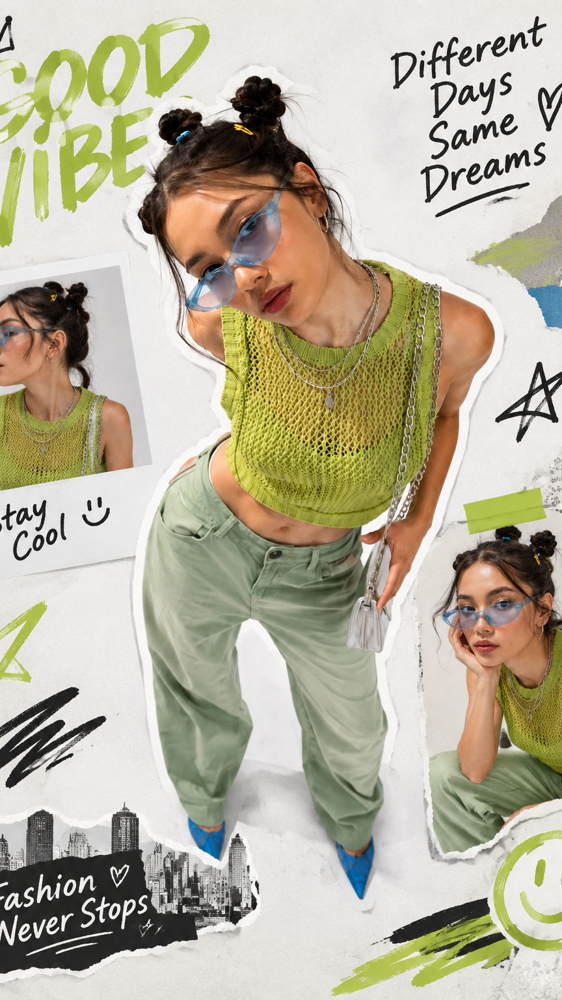
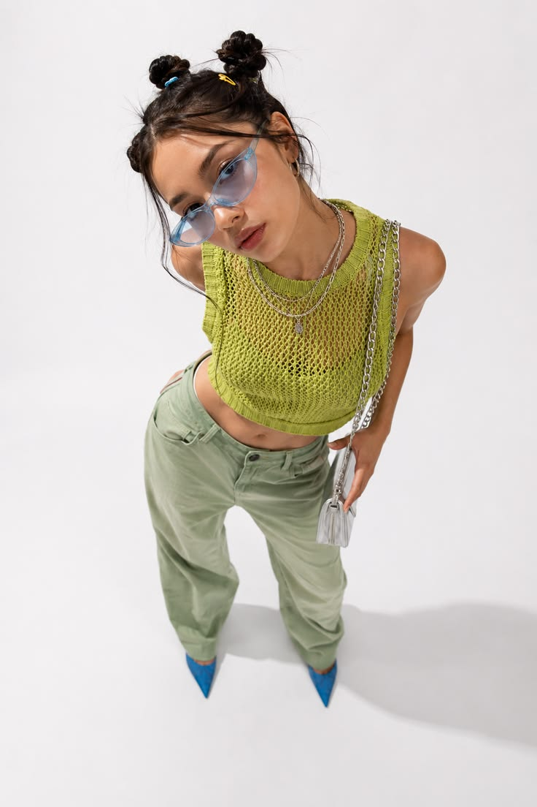
这是一个节点式的图像和视频生成无限画布，并支持一键启动。
当前版本的图像生成由 Right Codes Draw API 提供支持，视频生成由火山方舟 API 提供支持。
图像模型主要包括 Image 2 和 Nano banana；视频模型则覆盖 Seedance 系列。
打开终端，在 PowerShell 中输入以下命令：
node -v 或 node --version
v20.15.0、v22.4.1 等 20+ 版本表示环境已满足。
v18.20.3、v16.20.2 等版本低于 20，需要更新 Node.js。
如果系统提示 'node' 不是内部或外部命令，说明 Node.js 尚未安装或环境变量尚未配置。请从官方地址下载安装：
进入项目文件夹，将路径替换为你实际保存项目的位置：
cd E:\kacey\codex\Local-ai-image-main npm install
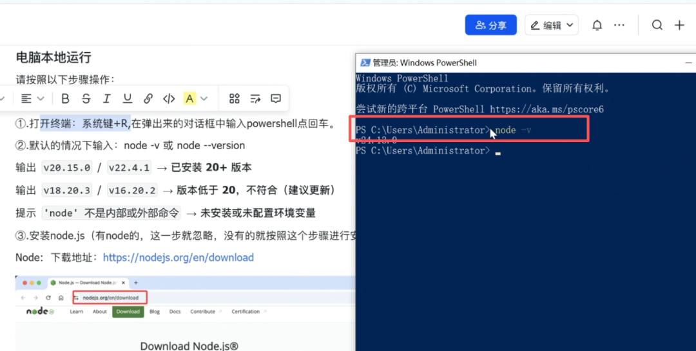
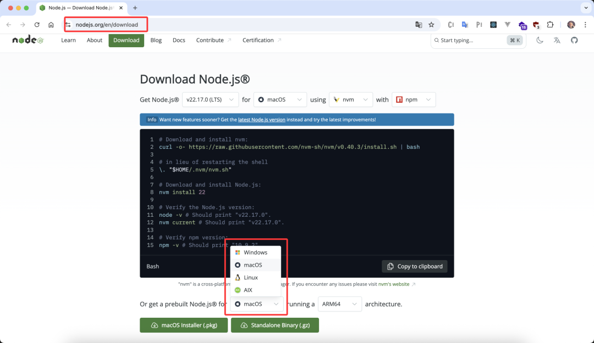
图片模型包含 Image 2 和 Nano banana。原文中的图片模型对照表可通过下方截图查看完整信息。
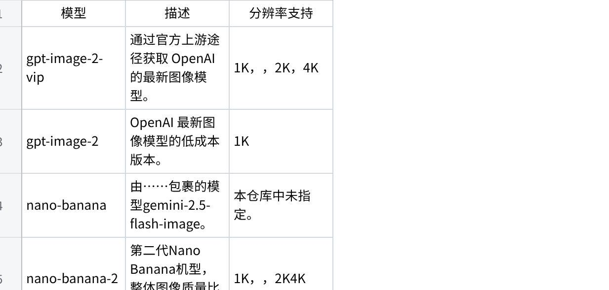
视频模型包含 Seedance 1.0 Pro、1.5 Pro、2.0 和 2.5 系列。模型开通方式分为免费额度体验和付费条件开通两类。
Seedance 1.5 Pro、Seedance 1.0 Pro Fast 面向未开通过模型服务的新用户，平台会赠送 200 万 tokens 的免费额度。额度耗尽后，调用会失败；如需继续使用，需要进行实名认证并手动开通对应模型服务。
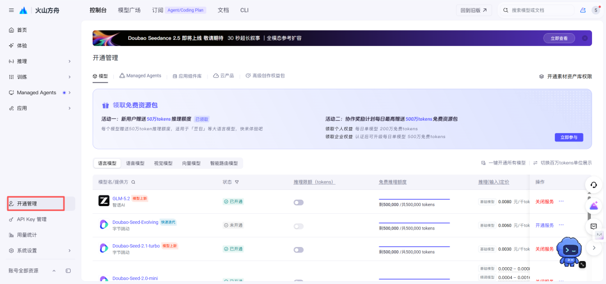
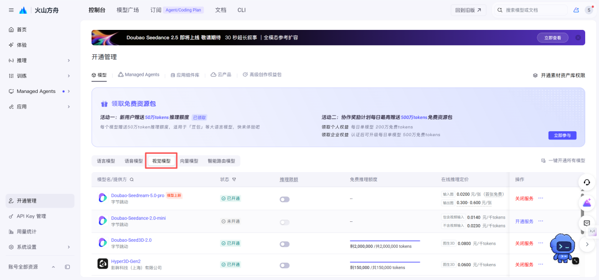
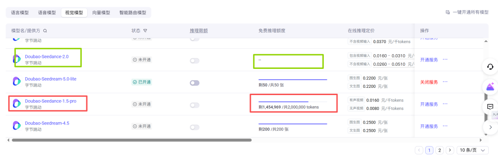
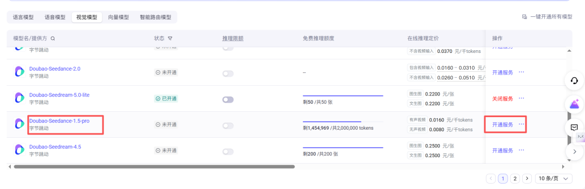
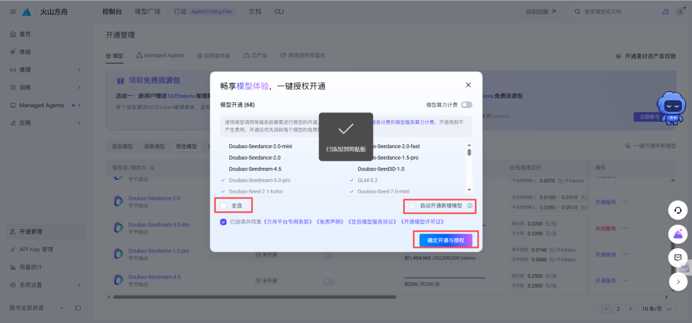
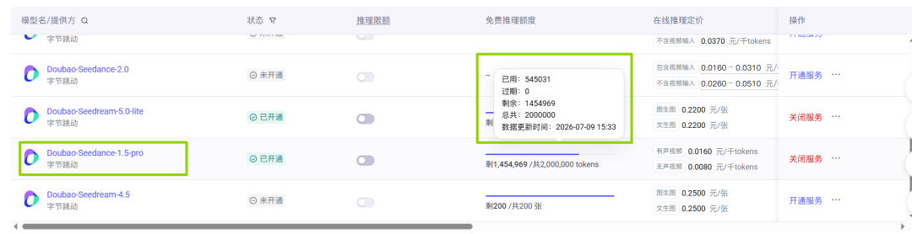
开通 Seedance 2.0 及 2.5 系列，满足以下任一条件即可：
| 条件 | 说明 |
|---|---|
| 账户余额 > 200 元 | 满足余额条件后可开通服务。 |
| 已购买资源包 | 已购买 Seedance 2.0 或 2.5 系列资源包且有可用余量。 |
当账户余额超过 200 元，或资源包有可用余量时，可以在火山方舟开通服务。开通后，就能在视频节点中选择 2.0 和 2.5 模型。
根据官网介绍，只有 Seedance 2.0 支持 1080p 和 4K 分辨率。生成多版视频时，可以先使用 mini 模型进行低成本试错，确认内容后再用 2.0 做高清处理。
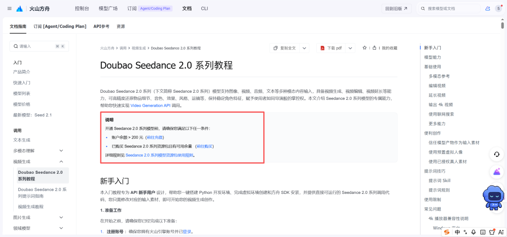
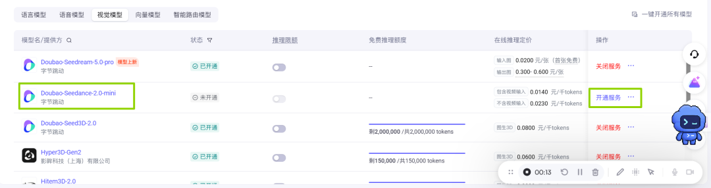
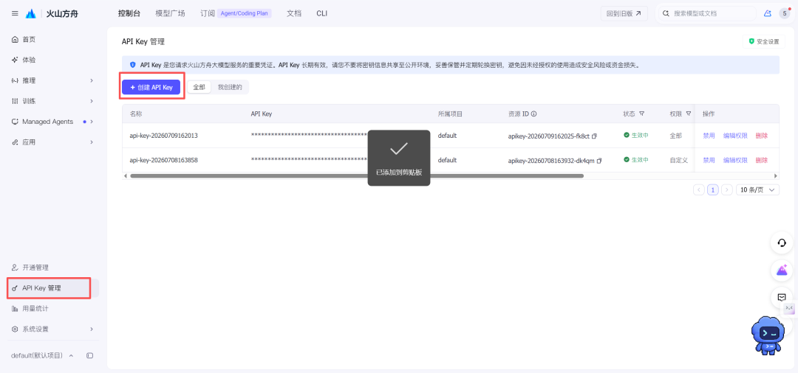
进入 API Key 管理页面，创建一个新的 key，并复制保存。
在项目根目录找到 .env.example 文件，将复制的 key 填入对应位置，并按项目需要保存为环境配置文件。
图片生成 key 可从 Right Codes 获取：
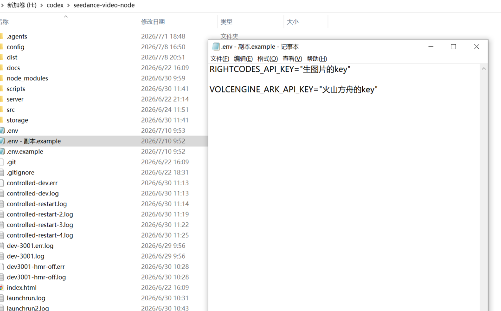
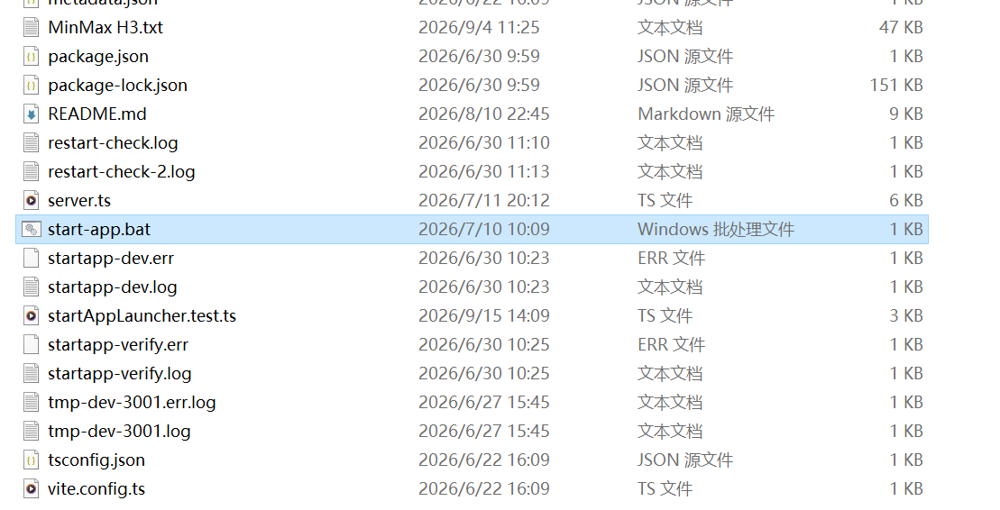
打开项目文件夹，双击其中的 start-app.bat 文件，即可启动本地无限画布。
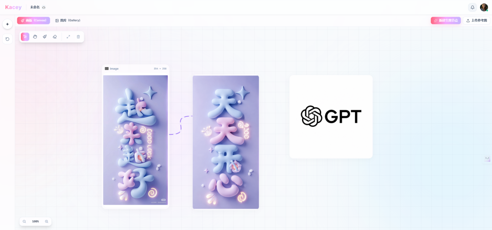